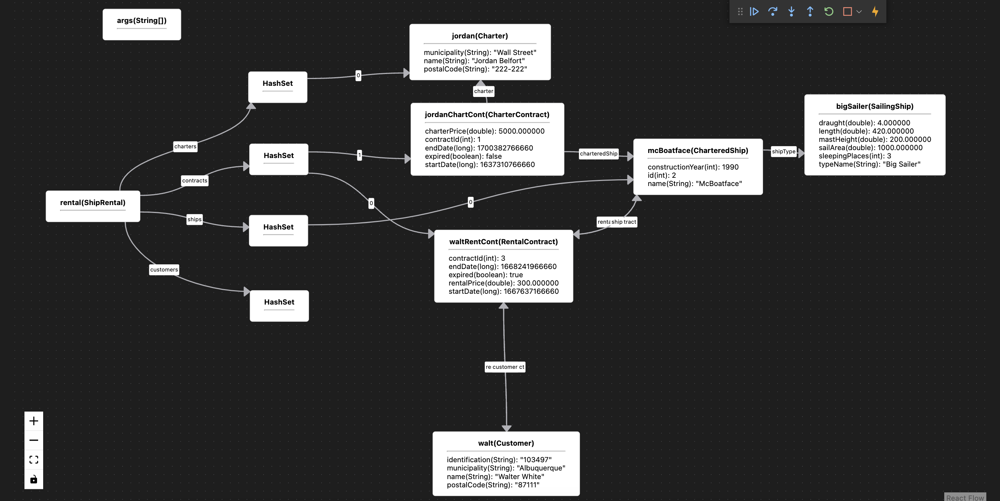

Education
Tokyo Institute of Technology
Master's (2021 - Present)
Mathematical and Computing Science

- Researching Programming Languages and Software Development Environment
- Current research topic is JIGSAW: Visual Debugger with a Customizable View
- Active in the Tokyo Tech International Students Association (TISA)
- Expected graduation in September 2023
University of Twente
Bachelor's (2018 - 2021)
Technical Computer Science

Research
JIGSAW: Visual Debugger with a Customizable View
September 2021 - Present
A debugger is a computer program used by programmers to test and help find mistakes (bugs) in the program they are currently writing. It allows programmers to see the state of the program in a step-by-step manner. However, once programs are large enough, the states become difficult to understand, especially since most debuggers do not provide any graphical visualizations to help the programmers in this effort. Moreover, another problem arises when programmers would like to customize these visualizations to better understand the states according to their conventions.
This research aims to propose a solution to these two problems. It aims to investigate and execute the approaches for the development of a debugger with intuitive, convenient, and easy-to-understand visualizations. On top of that — and by far the most challenging part — it also aims to make this visualization customizable according to the programmer's liking.

I chose this topic because similar projects have not seemed to have accomplished this view customizabiliy feature. Additionally, I am also motivated by my personal experience with debuggers in this area. Finally, since this is new territory for me, I would learn lots of new technologies and concepts in this research, including the workings of programming languages, the development of a programming tool, and the makings of intuitive user interfaces in the debugger's front-end.
MODEST Language Syntax for Structural Model Parameters
April - July 2021
par {
:: Clock()
:: Host()
:: Host()
:: Host()
}
const H = 3;
...
par {
:: Clock()
for (i : 0..H) {
:: Host()
}
}
MODEST is a modeling language built and designed by the Formal Methods and Tools Group of the University of Twente together with the Dependable Systems and Software Group of Saarland University. Its purpose is to facilitate programmers with simulations — hereafter referred to as models — of systems that they can specify. A model specification written in this language is then translated into automata that, in turn, simulate the model.
The problem this research proposed a solution for is the absence of iterative specification statements, which is a result of its nature of translating a specification into automata instead of into another language as with most languages. This research devised a way to work around this shortcoming by adding a new syntax into the language and processing it in a way that imitates iterative declarations. This research was presented at the 35th Twente Student Conference on IT in July 2021, for which I won the "Best Presentation" award. The paper describing my research can be found here.
Skills
Fields
- Programming Language Design and Development
- Game Development
- Web Development
- Databases
- Embedded Systems
Proficiencies
- Unity
- GraalVM/Truffle
- Raspberry Pi
- Github
- ANTLR
- Linux
- PostgreSQL
- Android
- Gradle
- Maven
Programming Languages
- Java
- Python
- C#
- Javascript
- C++
- C
- Haskell
×

Projects
Kennispunt Twente Dashboard
- Java
- Javascript
- PostgreSQL
- HTML
Kennispunt Twente, a local transportation company in Twente, the Netherlands, requested a browser dashboard that shows the trends of locations, routes, and revenues. My group and I created the dashboard from scratch. The features included:
- Access distinction for different roles
- An extensive filter system
- Bing maps to show location and route trends, and data of a single or multiple trips
As a result, our dashboard was incorporated into their office systems. Unfortunately, images of this project cannot be shown.
Planet Balls Game


My group and I built a simple video game written in Java.
- Players throw balls to hit as many boxes as they can
- A planet is chosen beforehand, affecting the balls with different gravity levels
- A ball is thrown by a hand wave
- The power of the ball is proportionate to the speed of the hand wave
- The sensor mounted to the Raspberry Pi records the wave-input, and communicates it to the game
Prevention of Recurring Episodes (PORE)
.png)
We built an android application prototype that we intended to be used by those who have experienced depression.
- Assists patients from relapsing
- Intended to be used alongside regular therapist visits, providing data for both parties
- However, the focus is not on the app, but on the Human Computer Interaction research methods done in order to achieve it
PyVa Compiler
def void printInt(int i) { print i; }
def record IntArray { int length; int[] arr; }
IntArray intArray = new IntArray;
intArray.length = 10;
intArray.arr = [1,2,3,4,5,6,7,8,9,10];
for (int i = 0; i < intArray.length; i = i + 1) {
printInt(intArray.arr[i]);
}
def record string { int length; char[] s; }
string s = new string;
s.length = 4;
s.s = "PyVa"; // string literals are considered char[]
printInt(s.length);
for (int i = 0; i < s.length; i = i + 1) { print s.s[i]; }
A compiler made from scratch whose syntax was inspired by Java's and Pythons syntaxes.
- Compiles a program into an instruction simulation language, Sprill, which is processed by Sprockell
- ANTLR processes the syntax grammar and generates a parser
- The parser outputs is used to do type checking, intermediate representation generation, and the emission to a Sprill program
- In three weeks, PyVa's features include: primitive types, strings, scopes, if statements, for-loops, while-loops, soft division, records, arrays, multi-dimensional arrays, functions, and concurrency
Automatic Cocktail Mixer

- Java
- Python
- Raspberry Pi
- Android

- Users can customize drinks through an Android application by specifying the parts of the drink
- Users could tell the mixer to create a drink through the same app
- The app communicates with the Raspberry Pi mounted on the mixer along with the drink information
- The Raspberry Pi controls the pump, servos, and rail to move the glass and dispense liquids according to the received data
Interactive Solver for Polynomial Inequalities Using Interval Arithmetic


To assist the research of a professor at the University of Twente, my group built an interactive solver which helps visualize inequalities that use interval arithmetic, which is difficult to comprehend without proper visualizations.
- The user inputs an inequality using interval arithmetic
- The solver parses the input, calculates regions, and displays relevant information
- Displays include the Region Chart, Region Tree, History, and Region Split Configurations
- In each display, regions are either red, green, or grey, indicating that they are false, true, or undefined under the inequality, respectively
- The user could further customize the view
- The most notable customization is manipulating regions, where users could either refine or combine
Contact
Contact
Your message has been sent.